让我们近距离观察一下:
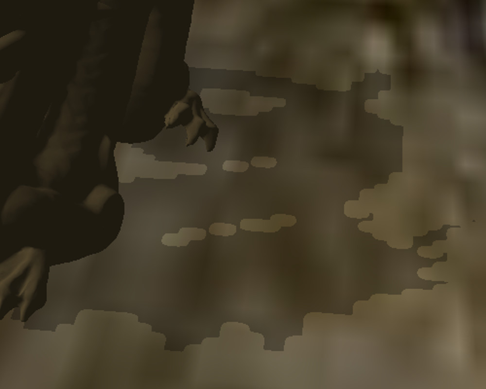
阴影的质量不高,因为这种块效应，将其称为透视锯齿，视图空间中的大量像素被映射到阴影贴图中的同一像素，这意味着所有这些像素要么处于阴影中，要么处于光亮中，从而产生块状感。换句话说，由于阴影贴图的分辨率不够高，因此无法充分覆盖视图空间。解决这个问题的一个明显方法是增加阴影贴图的分辨率，但这会增加我们应用程序的内存占用，因此它可能不是最好的做法。
处理此问题的另一种方法是注意靠近相机的阴影比远处物体的阴影重要得多。无论如何，远处的物体都较小，通常眼睛会聚焦于附近发生的事情，而将其余的视为“背景”。如果我们能找到一种方法，对较近的物体使用专用的阴影贴图，对远处的物体使用不同的阴影贴图，那么第一个阴影贴图将只需要覆盖较小的区域，从而减少我们上面讨论的比率。简而言之，这就是级联阴影贴图（又名 CSM）的全部内容。CSM 被认为是处理透视锯齿的最佳方法之一。让我们看看如何实现它。
从高层视图来看，我们将把视锥体分割成几个级联（因为它不需要像前面的示例中那样只有两个）。出于本教程的目的，我们将使用三个级联：近、中和远。该算法本身非常通用，因此如果您愿意，可以使用更多级联。每个级联都会被渲染成它自己的私有阴影贴图。阴影算法本身将保持不变，但在从阴影贴图采样深度时，我们需要根据距观察者的距离选择适当的贴图。让我们看一下通用的视锥体：
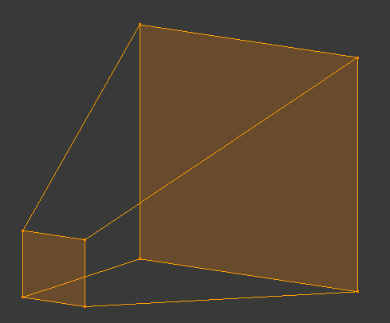
像往常一样，我们有一个小的近平面和一个更大的远平面。现在让我们从上面看一下同一个平截头体：
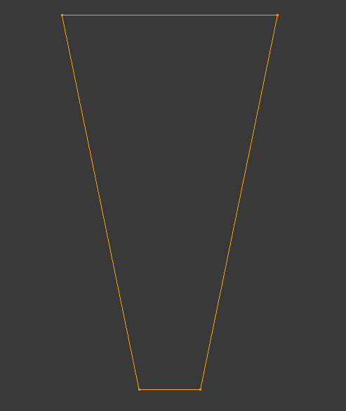
下一步是将近平面到远平面的范围分成三部分。我们将其称为近、中、远。另外，我们添加光线方向（右侧的箭头）：
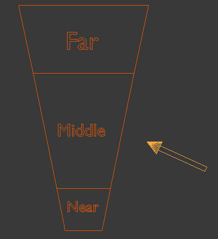
那么我们如何将每个级联渲染成它自己的私有阴影贴图呢？让我们考虑一下阴影贴图算法中的阴影阶段。我们设置一些东西来从光的角度渲染场景。这意味着使用对象的世界变换、基于光线的视图变换和投影矩阵创建一个 WVP 矩阵。由于本教程基于处理定向光阴影的教程 47，因此投影矩阵将是正交的。一般来说，CSM 在主要光源通常是太阳的户外场景中更有意义，因此在这里使用定向光是很自然的。如果您查看上面的 WVP 矩阵，您会发现所有级联的前两个部分（世界和视图）都是相同的。毕竟，物体在世界中的位置以及基于光源的相机的方向与将视锥体分裂成级联无关。这里重要的只是投影矩阵，因为它定义了最终渲染区域的范围。由于正交投影是使用盒子定义的，我们需要定义三个不同的盒子，它们将被转换为三个不同的正交投影矩阵。这些投影矩阵将用于创建三个 WVP 矩阵，以将每个级联渲染为其自己的阴影贴图。
最合乎逻辑的做法是使这些框尽可能小，以保持视图像素与阴影贴图像素的比率尽可能低。这意味着为每个级联创建一个沿光方向矢量定向的边界框。让我们为第一个级联创建一个这样的边界框：
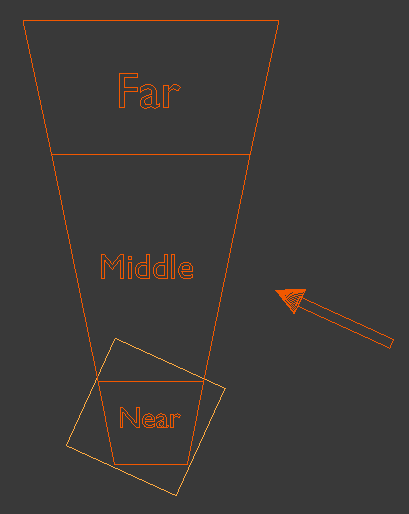
现在让我们为第二个级联创建一个边界框：
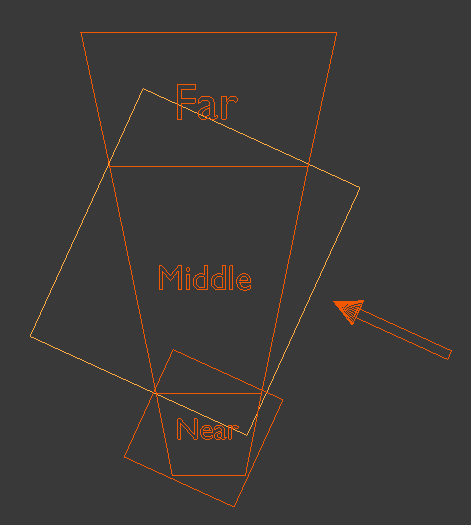
最后是最后一个级联的边界框：
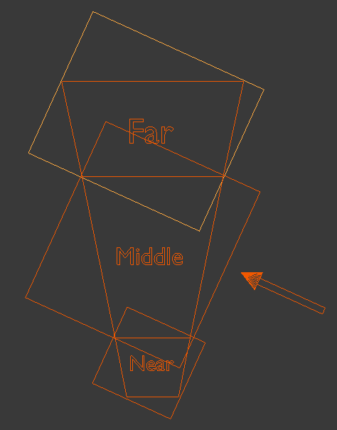
正如您所看到的，由于光线的方向，边界框存在一些重叠，这意味着某些像素将被渲染到多个阴影贴图中。只要单个级联的所有像素完全位于单个阴影贴图中，就没有问题。在着色器中用于阴影计算的阴影贴图的选择将基于像素与实际观看者的距离。
作为阴影阶段正投影的基础的边界框的计算是该算法中最复杂的部分。这些盒子必须在光空间中描述，因为投影发生在世界和视图变换之后（此时光从原点“起源”并沿正 Z 轴指向）。由于框将被计算为所有三个轴上的最小/最大值，因此它们将在光线方向上对齐，这就是我们投影所需的。为了计算边界框，我们需要知道每个级联在光空间中的样子。为此，我们需要执行以下步骤：
计算视图空间中每个级联的八个角。这很简单，需要简单的三角函数：
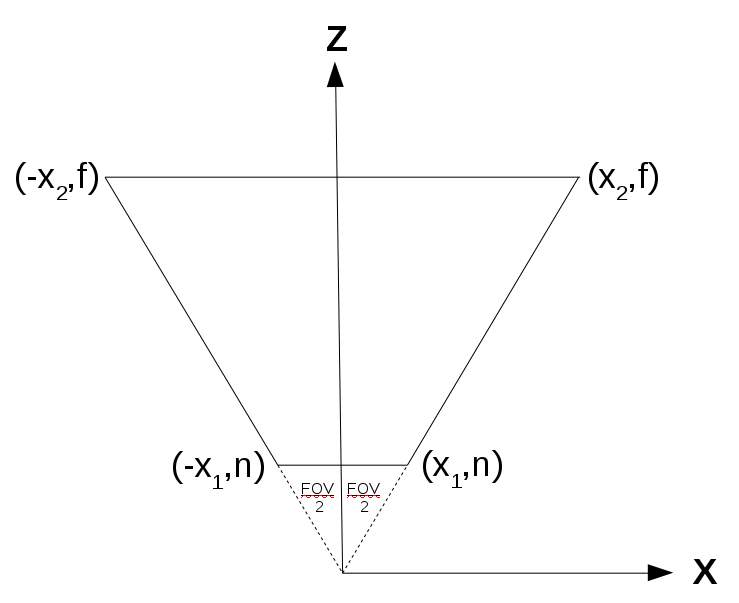
上图表示任意级联（因为每个级联本身基本上是一个截锥体，并且与其他级联共享相同的视场角）。请注意，我们是从上往下看 XZ 平面。我们需要计算 X 1和 X 2：
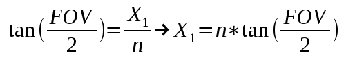
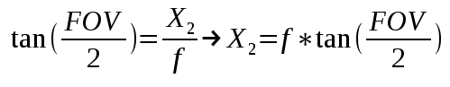
这为我们提供了视图空间中级联的八个坐标的 X 和 Z 分量。对垂直视场角使用类似的数学运算，我们可以获得 Y 分量并最终确定坐标。
现在我们需要将级联坐标从视图空间转换回世界空间。假设观察者的方向使得在世界空间中的截锥体看起来像这样（红色箭头是光线方向，但现在忽略它）：

为了从世界空间转换到视图空间，我们将世界位置向量乘以视图矩阵（基于相机位置和旋转）。这意味着，如果我们已经有了视图空间中级联的坐标，我们必须将它们乘以视图矩阵的逆矩阵，以便将它们转换到世界空间：
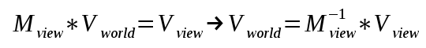
通过世界空间中的视锥体坐标，我们现在可以像任何其他对象一样将它们转换为光空间。请记住，光空间与视图空间完全相同，但我们使用光源代替相机。由于我们处理的是没有原点的定向光，因此我们只需要旋转世界，使光方向与正 Z 轴对齐。光的原点可以简单地是光空间坐标系的原点（这意味着我们不需要任何平移）。如果我们使用上图（红色箭头是光方向）来做到这一点，光空间中的级联平截头体应该如下所示：
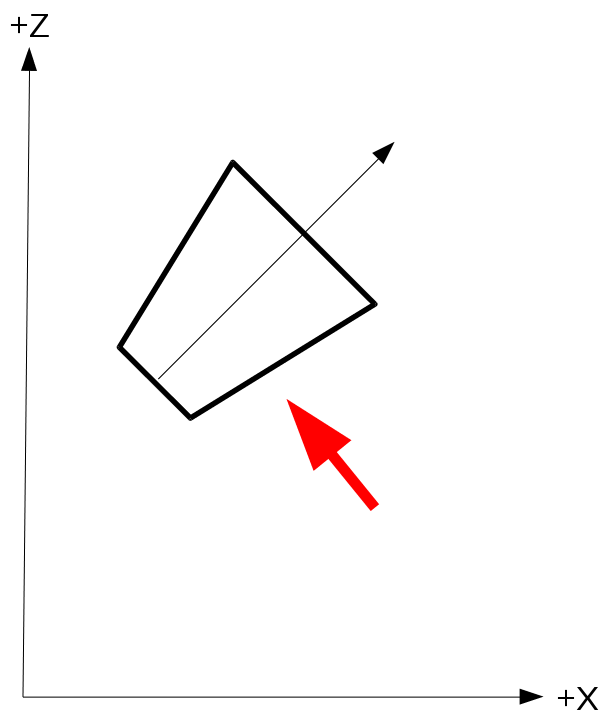
对于最终在光空间中的级联坐标，我们只需要通过获取八个坐标的 X/Y/Z 分量的最小/最大值来为其生成一个边界框。该边界框提供正交投影的值，用于将此级联渲染到其阴影贴图中。通过分别为每个级联生成正交投影，我们现在可以将每个级联渲染为不同的阴影贴图。在光照阶段，我们将通过根据距观察者的距离选择阴影贴图来计算阴影系数。